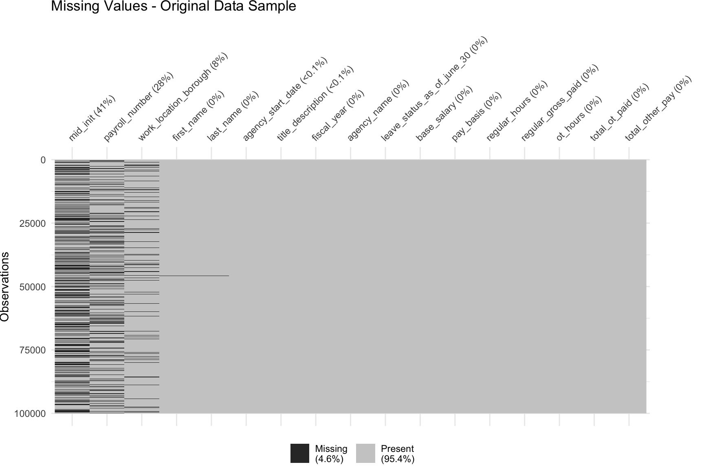
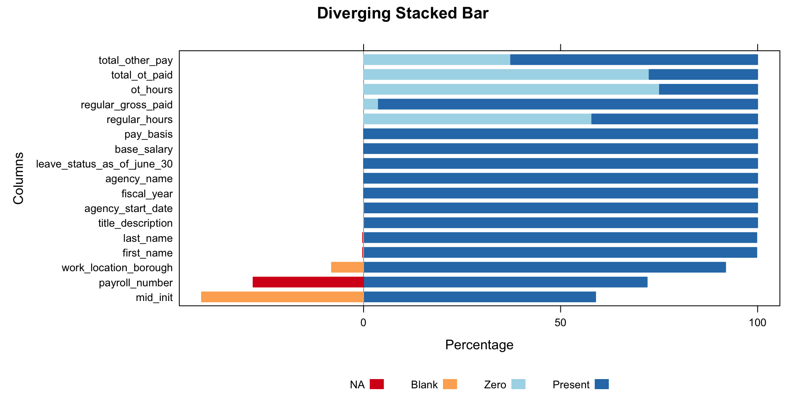
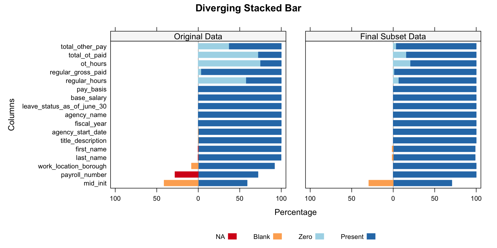
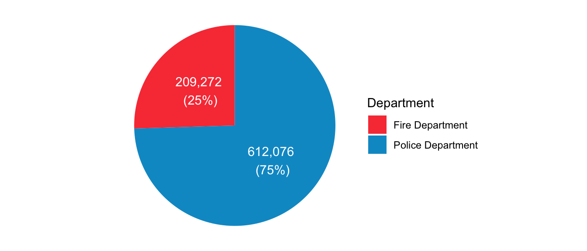

| Dataset Name | Citywide Payroll Data (Fiscal Year) |
| Provided by | Office of Payroll Administration (OPA) |
| Data Category | City Government |
| Frequency of Updates | Annually |
| Date Created | October 31, 2015 |
| Data Last Updated | October 30, 2024 |
| Dimensions | 6,225,611 rows and 17 columns |
| Each row represents | City Employee Salary per Fiscal Year |
| Source URL | https://data.cityofnewyork.us/ |
2 Data
For this project, we will be using a subset of the Citywide Payroll Data.
This dataset is available via NYC OpenData and provided by the Office of Payroll Administration (OPA).
- Fire Department
- Police Department
First, we will examine the metadata of the entire dataset, followed by an analysis of missing values to identify any potential issues that may impact our analysis. Finally, we will outline the decision-making process for selecting a subset of the data.
2.1 Description
Data Metadata
Data Format
| Column Name | Description | Data Type |
|---|---|---|
| Fiscal Year | Fiscal Year | Number |
| Payroll Number | Payroll Number | Number |
| Agency Name | The Payroll agency that the employee works for | Text |
| Last Name | Last name of employee | Text |
| First Name | First name of employee | Text |
| Mid Init | Middle initial of employee | Text |
| Agency Start Date | Date which employee began working for their current agency | Timestamp |
| Work Location Borough | Borough of employee's primary work location | Text |
| Title Description | Civil service title description of the employee | Text |
| Leave Status as of June 30 | Status of employee as of the close of the relevant fiscal year: Active, Ceased, or On Leave | Text |
| Base Salary | Base Salary assigned to the employee | Number |
| Pay Basis | Lists whether the employee is paid on an hourly, per diem or annual basis | Text |
| Regular Hours | Number of regular hours employee worked in the fiscal year | Number |
| Regular Gross Paid | The amount paid to the employee for base salary during the fiscal year | Number |
| OT Hours | Overtime Hours worked by employee in the fiscal year | Number |
| Total OT Paid | Total overtime pay paid to the employee in the fiscal year | Number |
| Total Other Pay | Includes any compensation in addition to gross salary and overtime pay, i.e., Differentials, lump sums, uniform allowance, meal allowance, retroactive pay increases, settlement amounts, and bonus pay, if applicable. | Number |
Importing the data
From this URL, you can click the button ‘Export’, and then select Download File-CSV format (All data 6225611 rows). This will download a file of about 840MB. Remember, we are using the data Last Updated on October 30, 2024.
The file will be downloaded with the name: Citywide_Payroll_Data__Fiscal_Year__YYYYMMDD.csv(YYYYMMDD refers to the date that you downloaded the file)
Once the data was downloaded, it was added to a new folder inside the repository called ‘data_source’.
2.2 Missing value analysis
Code
payroll_data_missing <-
payroll_data |>
sample_n(100000) |>
mutate(across(everything(), ~ if_else(. == "", NA, .)))Code
payroll_data_missing |>
# select (-agency_name_clean, -work_location_borough_clean) |>
# sample_n(10000) |>
vis_miss(
sort_miss = TRUE,
# cluster = TRUE,
show_perc_col = TRUE,
warn_large_data = FALSE,
) 
Code
payroll_data_total_summary <- payroll_data |>
summarise(across(everything(), ~ n())) |>
pivot_longer(
cols = everything(),
names_to = "Column",
values_to = "Total Count"
)
payroll_data_na_summary <- payroll_data |>
summarise(across(everything(), ~ sum(is.na(.)))) |>
pivot_longer(
cols = everything(),
names_to = "Column",
values_to = "NA"
)
payroll_data_blank_summary <- payroll_data |>
summarise(across(everything(), ~ sum(. == "", na.rm = TRUE))) |>
pivot_longer(
cols = everything(),
names_to = "Column",
values_to = "Blank"
)
payroll_data_zero_summary <- payroll_data |>
summarise(across(everything(), ~ sum(. == 0, na.rm = TRUE))) |>
pivot_longer(
cols = everything(),
names_to = "Column",
values_to = "Zero"
)Code
payroll_data_combined_summary <-
payroll_data_total_summary |>
inner_join(payroll_data_na_summary, by = "Column") |>
inner_join(payroll_data_blank_summary, by = "Column") |>
inner_join(payroll_data_zero_summary, by = "Column")Code
payroll_data_combined_summary# A tibble: 17 × 5
Column `Total Count` `NA` Blank Zero
<chr> <int> <int> <int> <int>
1 fiscal_year 6225611 0 0 0
2 payroll_number 6225611 1745440 0 0
3 agency_name 6225611 0 0 0
4 last_name 6225611 27 13581 0
5 first_name 6225611 90 13583 0
6 mid_init 6225611 0 2560039 42
7 agency_start_date 6225611 0 140 0
8 work_location_borough 6225611 0 506234 0
9 title_description 6225611 0 164 0
10 leave_status_as_of_june_30 6225611 0 0 0
11 base_salary 6225611 0 0 0
12 pay_basis 6225611 0 0 0
13 regular_hours 6225611 0 0 3605731
14 regular_gross_paid 6225611 0 0 234147
15 ot_hours 6225611 0 0 4674843
16 total_ot_paid 6225611 0 0 4511997
17 total_other_pay 6225611 0 0 2323713Code
payroll_data_combined_summary_likert <-
payroll_data_combined_summary |>
mutate(`Present` = `Total Count` - `NA` - `Blank` - Zero) |>
mutate(`Present` = `Present` / `Total Count`) |>
mutate(`NA` = `NA` / `Total Count`) |>
mutate(`Blank` = `Blank` / `Total Count`) |>
mutate(`Zero` = Zero / `Total Count`) |>
dplyr::select(`Column`,`NA`,`Blank`,Zero,`Present`) |>
filter(!Column %in% c('agency_name_clean','work_location_borough_clean'))
payroll_data_combined_summary_likert# A tibble: 17 × 5
Column `NA` Blank Zero Present
<chr> <dbl> <dbl> <dbl> <dbl>
1 fiscal_year 0 0 0 1
2 payroll_number 0.280 0 0 0.720
3 agency_name 0 0 0 1
4 last_name 0.00000434 0.00218 0 0.998
5 first_name 0.0000145 0.00218 0 0.998
6 mid_init 0 0.411 0.00000675 0.589
7 agency_start_date 0 0.0000225 0 1.00
8 work_location_borough 0 0.0813 0 0.919
9 title_description 0 0.0000263 0 1.00
10 leave_status_as_of_june_30 0 0 0 1
11 base_salary 0 0 0 1
12 pay_basis 0 0 0 1
13 regular_hours 0 0 0.579 0.421
14 regular_gross_paid 0 0 0.0376 0.962
15 ot_hours 0 0 0.751 0.249
16 total_ot_paid 0 0 0.725 0.275
17 total_other_pay 0 0 0.373 0.627Code
library(HH)Loading required package: latticeLoading required package: gridLoading required package: latticeExtra
Attaching package: 'latticeExtra'The following object is masked from 'package:ggplot2':
layerLoading required package: multcompLoading required package: mvtnormLoading required package: survivalLoading required package: TH.dataLoading required package: MASS
Attaching package: 'MASS'The following object is masked from 'package:dplyr':
select
Attaching package: 'TH.data'The following object is masked from 'package:MASS':
geyserLoading required package: gridExtra
Attaching package: 'gridExtra'The following object is masked from 'package:dplyr':
combine
Attaching package: 'HH'The following object is masked from 'package:lubridate':
intervalThe following object is masked from 'package:purrr':
transposeThe following object is masked from 'package:base':
is.RCode
likert_colors <- c("NA" = "#D7191C",
"Blank" = "#FDAE61",
"Zero" = "#ABD9E9",
"Present" = "#2C7BB6")
HH::likert(x=Column~ .,payroll_data_combined_summary_likert,
positive.order=TRUE,
as.percent = T,
main = 'Diverging Stacked Bar',
xlab='Percentage',
ylab='Columns',
col = likert_colors,
ReferenceZero=2.5,
rightAxis=FALSE
)
Code
payroll_data_fire_police <- readRDS("data_source/payroll_data_fire_police.rds")
payroll_data_fire_police_total_summary <- payroll_data_fire_police |>
summarise(across(everything(), ~ n())) |>
pivot_longer(
cols = everything(),
names_to = "Column",
values_to = "Total Count"
)
payroll_data_fire_police_na_summary <- payroll_data_fire_police |>
summarise(across(everything(), ~ sum(is.na(.)))) |>
pivot_longer(
cols = everything(),
names_to = "Column",
values_to = "NA"
)
payroll_data_fire_police_blank_summary <- payroll_data_fire_police |>
summarise(across(everything(), ~ sum(. == "", na.rm = TRUE))) |>
pivot_longer(
cols = everything(),
names_to = "Column",
values_to = "Blank"
)
payroll_data_fire_police_zero_summary <- payroll_data_fire_police |>
summarise(across(everything(), ~ sum(. == 0, na.rm = TRUE))) |>
pivot_longer(
cols = everything(),
names_to = "Column",
values_to = "Zero"
)Code
payroll_data_fire_police_combined_summary <-
payroll_data_fire_police_total_summary |>
inner_join(payroll_data_fire_police_na_summary, by = "Column") |>
inner_join(payroll_data_fire_police_blank_summary, by = "Column") |>
inner_join(payroll_data_fire_police_zero_summary, by = "Column")Code
payroll_data_fire_police_combined_summary_likert <-
payroll_data_fire_police_combined_summary |>
mutate(`Present` = `Total Count` - `NA` - `Blank` - Zero) |>
mutate(`Present` = `Present` / `Total Count`) |>
mutate(`NA` = `NA` / `Total Count`) |>
mutate(`Blank` = `Blank` / `Total Count`) |>
mutate(`Zero` = Zero / `Total Count`) |>
dplyr::select(`Column`,`NA`,`Blank`,Zero,`Present`) |>
filter(!Column %in% c('agency_name_clean','work_location_borough_clean'))Code
payroll_data_missing_group_likert <- bind_rows(
payroll_data_combined_summary_likert |> mutate(group= 'Original Data'),
payroll_data_fire_police_combined_summary_likert |> mutate(group= 'Final Subset Data')
)
# payroll_data_missing_group_likertCode
HH::likert(x=Column~. | group,payroll_data_missing_group_likert,
positive.order=TRUE,
as.percent = T,
main = 'Diverging Stacked Bar',
xlab='Percentage',
ylab='Columns',
col = likert_colors,
ReferenceZero=2.5,
rightAxis=FALSE,
xlimEqualLeftRight=TRUE
)
Code
payroll_data_fire_police |>
filter(last_name == "") |>
group_by(agency_name) |>
summarise(`Count of Blank Records` = n()) |>
kable(col.names = c("Agency", "Count of Blank Records")) | Agency | Count of Blank Records |
|---|---|
| POLICE DEPARTMENT | 9992 |
2.3 Understanding and cleaning the raw data
Code
payroll_data |>
summarise(
"Number of Agencies" = n_distinct(agency_name),
"Number of Titles" = n_distinct(title_description),
"Number of Locations" = n_distinct(work_location_borough),
"Number of Pay Basis" = n_distinct(pay_basis),
"Number of Fiscal Years" = n_distinct(fiscal_year)
) |>
kable()| Number of Agencies | Number of Titles | Number of Locations | Number of Pay Basis | Number of Fiscal Years |
|---|---|---|---|---|
| 170 | 1991 | 23 | 4 | 11 |
2.3.1 Agencies
Many of the agencies in the raw data have the following format: AGENCY_NAME #NUMBER.Examples:
- BROOKLYN COMMUNITY BOARD #1
- BROOKLYN COMMUNITY BOARD #2
- BROOKLYN COMMUNITY BOARD #3
We will group Agency names by aggregating all agencies that have the same name, but different numbers. This will reduce overall number os agencies.
Code
payroll_data <-
payroll_data |>
mutate(agency_name_clean = trimws(gsub("#\\d+$", "", agency_name)))
payroll_data |>
summarise(
"Number of Agencies Before" = n_distinct(agency_name),
"Number of Agencies After" = n_distinct(agency_name_clean),
) |>
kable()| Number of Agencies Before | Number of Agencies After |
|---|---|
| 170 | 116 |
Now, let’s take a look at the top 10 Agencies:
Code
payroll_data_summary <- payroll_data |>
group_by(agency_name_clean) |>
summarise(
Total_records = n()
) |>
arrange(desc(Total_records)) |>
slice_head(n = 10)
payroll_data_summary |>
kable(col.names = c("Agency", "Total Records")) |>
row_spec(which(payroll_data_summary$agency_name_clean == "FIRE DEPARTMENT"), background = "#f94144", color = "white") |>
row_spec(which(payroll_data_summary$agency_name_clean == "POLICE DEPARTMENT"), background = "deepskyblue3", color = "white")| Agency | Total Records |
|---|---|
| DEPT OF ED PEDAGOGICAL | 1207427 |
| DEPT OF ED PER SESSION TEACHER | 997983 |
| POLICE DEPARTMENT | 612076 |
| DEPT OF ED PARA PROFESSIONALS | 412698 |
| BOARD OF ELECTION POLL WORKERS | 375001 |
| DEPT OF ED HRLY SUPPORT STAFF | 255501 |
| FIRE DEPARTMENT | 209272 |
| DEPARTMENT OF EDUCATION ADMIN | 181282 |
| DEPT OF PARKS & RECREATION | 170200 |
| HRA/DEPT OF SOCIAL SERVICES | 157963 |
2.3.2 Work Location Borough
When looking at the Work Location Borough, we see many recording with missing data (506,234 rows). We can also observe that the names of the locations are not standardized, some names are Uppercase and some are not (MANHATTAN vs Manhattan).
Code
payroll_data |>
group_by(work_location_borough) |>
summarise(
Total_records = n()
) |>
arrange(desc(Total_records)) |>
slice_head(n = 10) |>
kable(col.names = c("Locations", "Total Records")) |>
row_spec(which(payroll_data |>
group_by(work_location_borough) |>
summarise(Total_records = n()) |>
arrange(desc(Total_records)) |>
slice_head(n = 10) |>
pull(work_location_borough) %in% c("","Bronx", "MANHATTAN", "Manhattan")), background = "#fcefb4", color = "black")| Locations | Total Records |
|---|---|
| MANHATTAN | 4077947 |
| QUEENS | 621225 |
| BROOKLYN | 523572 |
| 506234 | |
| BRONX | 286551 |
| OTHER | 116918 |
| RICHMOND | 77020 |
| WESTCHESTER | 5653 |
| ULSTER | 3245 |
| Manhattan | 1622 |
Our first step here is to capitalize all the location names.
Code
payroll_data <- payroll_data |>
mutate(work_location_borough_clean = toupper(work_location_borough))Code
payroll_data |>
summarise(
"Number of Locations Before" = n_distinct(work_location_borough),
"Number of Locations After" = n_distinct(work_location_borough_clean),
) |>
kable()| Number of Locations Before | Number of Locations After |
|---|---|
| 23 | 19 |
Now let’s take a look at the locations from the top 10 Agencies.
Code
required_boroughs <- c("BRONX", "BROOKLYN", "MANHATTAN", "QUEENS", "RICHMOND")
agencies_present_in_required_boroughs <-
payroll_data |>
filter(work_location_borough_clean %in% required_boroughs) |>
group_by(agency_name_clean) |>
summarise(
borough_count = n_distinct(work_location_borough_clean)
) |>
filter(borough_count == length(required_boroughs)) |>
filter(agency_name_clean %in% payroll_data_summary$agency_name_clean) |>
pull(agency_name_clean)Code
payroll_data_agencies_present_in_required_boroughs <-
payroll_data |>
filter(agency_name_clean %in% payroll_data_summary$agency_name_clean) |>
filter(agency_name_clean %in% agencies_present_in_required_boroughs) |>
group_by(agency_name_clean) |>
summarise(
Total_records = n(),
"Number of Locations" = n_distinct(work_location_borough_clean)
) |>
arrange(desc(Total_records))
payroll_data_agencies_present_in_required_boroughs |>
kable(col.names = c("Agency", "Total Records", "Number of Locations")) |>
row_spec(which(payroll_data_agencies_present_in_required_boroughs$agency_name_clean == "FIRE DEPARTMENT"), background = "#f94144", color = "white") |>
row_spec(which(payroll_data_agencies_present_in_required_boroughs$agency_name_clean == "POLICE DEPARTMENT"), background = "deepskyblue3", color = "white")| Agency | Total Records | Number of Locations |
|---|---|---|
| POLICE DEPARTMENT | 612076 | 5 |
| FIRE DEPARTMENT | 209272 | 7 |
| DEPARTMENT OF EDUCATION ADMIN | 181282 | 12 |
| DEPT OF PARKS & RECREATION | 170200 | 7 |
| HRA/DEPT OF SOCIAL SERVICES | 157963 | 8 |
Code
payroll_data |>
filter(agency_name_clean %in% c("POLICE DEPARTMENT","FIRE DEPARTMENT")) |>
filter(agency_name_clean %in% agencies_present_in_required_boroughs) |>
group_by(agency_name_clean,work_location_borough_clean,fiscal_year) |>
summarise(
Total_records = n(), .groups = 'drop'
) |>
arrange(agency_name_clean,work_location_borough_clean,fiscal_year) |>
filter (!work_location_borough_clean %in% required_boroughs) |>
kable(col.names = c("Agency", "Location", "Fiscal Year", "Total Records"))| Agency | Location | Fiscal Year | Total Records |
|---|---|---|---|
| FIRE DEPARTMENT | 2014 | 16555 | |
| FIRE DEPARTMENT | OTHER | 2022 | 1 |
2.3.3 Fiscal Year
Code
# Create the pivot table
pivot_table_fiscal_year <- payroll_data |>
filter(agency_name_clean %in% c(
"POLICE DEPARTMENT",
"FIRE DEPARTMENT"
)) |>
group_by(fiscal_year, agency_name_clean) |>
summarise(count = n(), .groups = 'drop') |>
pivot_wider(
names_from = agency_name_clean,
values_from = count,
values_fill = list(count = 0)
)
pivot_table_fiscal_year |>
kable(col.names = c("Fiscal Year", "FIRE DEPARTMENT", "POLICE DEPARTMENT")) |>
kable_styling() |>
column_spec(3, background = ifelse(as.matrix(pivot_table_fiscal_year[, 3]) == 0, "#fcefb4", ""))| Fiscal Year | FIRE DEPARTMENT | POLICE DEPARTMENT |
|---|---|---|
| 2014 | 16555 | 0 |
| 2015 | 17380 | 59264 |
| 2016 | 19934 | 65868 |
| 2017 | 18687 | 62516 |
| 2018 | 18391 | 59811 |
| 2019 | 18679 | 59970 |
| 2020 | 19193 | 60316 |
| 2021 | 19049 | 59009 |
| 2022 | 20920 | 60804 |
| 2023 | 19072 | 58617 |
| 2024 | 21412 | 65901 |
2.3.4 Pay Basis
Code
payroll_data |>
# filter(fiscal_year == "2024") |>
filter(agency_name_clean %in% c(
"POLICE DEPARTMENT",
"FIRE DEPARTMENT"
)) |>
group_by(agency_name_clean,pay_basis) |>
summarise(
Total_records = n(),
Count_of_titles = n_distinct(title_description)
, .groups = 'drop'
) |>
arrange(desc(Total_records)) |>
kable(col.names = c("Agency", "Pay Basis", "Total Records", "Count of Titles"))| Agency | Pay Basis | Total Records | Count of Titles |
|---|---|---|---|
| POLICE DEPARTMENT | per Annum | 573429 | 286 |
| FIRE DEPARTMENT | per Annum | 203929 | 199 |
| POLICE DEPARTMENT | per Hour | 32769 | 29 |
| POLICE DEPARTMENT | per Day | 5794 | 39 |
| FIRE DEPARTMENT | per Day | 3934 | 35 |
| FIRE DEPARTMENT | per Hour | 1324 | 47 |
| FIRE DEPARTMENT | Prorated Annual | 85 | 1 |
| POLICE DEPARTMENT | Prorated Annual | 84 | 1 |
Code
payroll_data |>
# filter(fiscal_year == "2024") |>
filter(agency_name_clean %in% c(
"POLICE DEPARTMENT",
"FIRE DEPARTMENT"
)) |>
filter(pay_basis == "Prorated Annual") |>
filter(title_description == "CHAPLAIN") |>
group_by(agency_name_clean,pay_basis,title_description) |>
summarise(
Total_records = n()
, .groups = 'drop'
) |>
arrange(agency_name_clean) |>
kable(col.names = c("Agency", "Pay Basis", "Title", "Total Records"))| Agency | Pay Basis | Title | Total Records |
|---|---|---|---|
| FIRE DEPARTMENT | Prorated Annual | CHAPLAIN | 85 |
| POLICE DEPARTMENT | Prorated Annual | CHAPLAIN | 84 |
Code
payroll_data_filtered <-
payroll_data |>
filter(agency_name_clean %in% c("POLICE DEPARTMENT","FIRE DEPARTMENT")) |>
filter(work_location_borough_clean %in% c("BRONX", "BROOKLYN", "MANHATTAN", "QUEENS", "RICHMOND")) |>
filter(fiscal_year > "2014") |>
filter(pay_basis %in% c("per Annum", "per Day", "per Hour"))Code
# Count NA values and pivot
na_summary <- payroll_data_filtered |>
summarise(across(everything(), ~ sum(is.na(.)))) |>
pivot_longer(
cols = everything(),
names_to = "Column",
values_to = "NA Count"
)
# Count blank values and pivot
blank_summary <- payroll_data_filtered |>
summarise(across(everything(), ~ sum(. == "", na.rm = TRUE))) |>
pivot_longer(
cols = everything(),
names_to = "Column",
values_to = "Blank Count"
)
# Count zero values and pivot
zero_summary <- payroll_data_filtered |>
summarise(across(everything(), ~ sum(. == 0, na.rm = TRUE))) |>
pivot_longer(
cols = everything(),
names_to = "Column",
values_to = "Zero Count"
)
# Combine all three summaries into one dataframe
combined_summary <- na_summary |>
inner_join(blank_summary, by = "Column") |>
inner_join(zero_summary, by = "Column")
# Display the combined result using kable
combined_summary |>
filter(`NA Count` > 0 | `Blank Count` > 0 | `Zero Count` > 0) |>
kable(col.names = c("Column", "NA Count", "Blank Count", "Zero Count"))| Column | NA Count | Blank Count | Zero Count |
|---|---|---|---|
| payroll_number | 243601 | 0 | 0 |
| last_name | 0 | 9992 | 0 |
| first_name | 0 | 9992 | 0 |
| mid_init | 0 | 236244 | 1 |
| regular_hours | 0 | 0 | 55220 |
| regular_gross_paid | 0 | 0 | 12285 |
| ot_hours | 0 | 0 | 168447 |
| total_ot_paid | 0 | 0 | 128243 |
| total_other_pay | 0 | 0 | 29997 |
2.3.5 Payroll Number
Code
payroll_data_filtered_payroll <- payroll_data_filtered |>
group_by(agency_name_clean,payroll_number,fiscal_year) |>
summarise(
Total_records = n()
,.groups = "drop"
) |>
arrange(agency_name_clean,fiscal_year,desc(Total_records))
payroll_data_filtered_payroll |>
kable(col.names = c("Agency", "Payroll Number", "Fiscal Year", "Total Records")) |>
column_spec(2, background = ifelse(is.na(as.matrix(payroll_data_filtered_payroll[, 2])), "#fcefb4", ""))| Agency | Payroll Number | Fiscal Year | Total Records |
|---|---|---|---|
| FIRE DEPARTMENT | NA | 2015 | 17372 |
| FIRE DEPARTMENT | NA | 2016 | 19926 |
| FIRE DEPARTMENT | NA | 2017 | 18679 |
| FIRE DEPARTMENT | 57 | 2018 | 18383 |
| FIRE DEPARTMENT | 57 | 2019 | 18671 |
| FIRE DEPARTMENT | 57 | 2020 | 19186 |
| FIRE DEPARTMENT | 57 | 2021 | 19042 |
| FIRE DEPARTMENT | 57 | 2022 | 20911 |
| FIRE DEPARTMENT | 57 | 2023 | 19063 |
| FIRE DEPARTMENT | 57 | 2024 | 21405 |
| POLICE DEPARTMENT | NA | 2015 | 59257 |
| POLICE DEPARTMENT | NA | 2016 | 65860 |
| POLICE DEPARTMENT | NA | 2017 | 62507 |
| POLICE DEPARTMENT | 56 | 2018 | 59802 |
| POLICE DEPARTMENT | 56 | 2019 | 59961 |
| POLICE DEPARTMENT | 56 | 2020 | 60308 |
| POLICE DEPARTMENT | 56 | 2021 | 59001 |
| POLICE DEPARTMENT | 56 | 2022 | 60795 |
| POLICE DEPARTMENT | 56 | 2023 | 58608 |
| POLICE DEPARTMENT | 56 | 2024 | 65893 |
Code
payroll_data_fire_police <-
payroll_data_filtered |>
mutate(
payroll_number = case_when(
is.na(payroll_number) & agency_name_clean == "FIRE DEPARTMENT" ~ 57,
is.na(payroll_number) & agency_name_clean == "POLICE DEPARTMENT" ~ 56,
TRUE ~ payroll_number
)
) |>
mutate(
agency_name = agency_name_clean,
work_location_borough = work_location_borough_clean
) |>
dplyr::select(-agency_name_clean, -work_location_borough_clean)2.3.6 Agency Start Date
Code
library(lubridate)
payroll_data_fire_police <-
payroll_data_fire_police |>
mutate(agency_start_date = mdy(agency_start_date))Save final Data:
Code
# CSV
# write.csv(payroll_data_fire_police, "data_source/payroll_data_fire_police.csv", row.names = FALSE)
# RDS
# saveRDS(payroll_data_fire_police, "data_source/payroll_data_fire_police.rds")
# payroll_data_fire_police <- readRDS("data_source/payroll_data_fire_police.rds")Missing value stuff goes here.
2.4 Understanding and cleaning the raw data
Note any issues / problems with the data, either known or that you discover.
2.5 Deciding on final data subset
Based on the analysis above, we will add a few filter to reduce and clean the dataset.
Filters applied to the dataset:
| Column Name | Filter |
|---|---|
| Fiscal Year | From 2015 to 2024 |
| Agency Name | FIRE DEPARTMENT, POLICE DEPARTMENT |
| Pay Basis | per Annum, per Day, per Hour |
Cleaning data and Handling NAs:
| Column Name | Note |
|---|---|
| Fiscal Year | 2014 had missing data for Police Department. 2014 will be removed. |
| Agency Name | Group agencies with similar names. |
| Payroll Number | Missing values have been backfilled based on Agency Name. |
| Work Location Borough | Uppercase all names. Filtering data only for top 5 Boroughs. |
| Pay Basis | Keeping only the top 3 Pay Basis. |
Size of Final subset Data
| Dimensions | 804,630 rows and 17 columns |
| Each row represents | City Employee Salary per Fiscal Year |
Record count by Agency:
Code
library(ggplot2)
library(tibble)
library(dplyr)
payroll_data_fire_police |>
group_by(agency_name) |>
summarise(
Count = n()
, .groups = 'drop'
) |>
arrange(desc(Count)) |>
mutate(Percentage = Count / sum(Count) * 100,
Label = paste(
format(Count, big.mark = ","), "\n", " (", sprintf("%.0f", Percentage), "%)", sep = "")) |>
ggplot(aes(x = "", y = Count, fill = agency_name)) +
geom_bar(stat = "identity", width = 1) +
coord_polar(theta = "y") +
scale_fill_manual(name= 'Agency', values = c("#f94144", "deepskyblue3")) +
# labs(title = "Record Count by Department") +
theme_void() +
geom_text(aes(label = Label), position = position_stack(vjust = 0.5), color = "white")
Overall dataset Information:
| Metrics | Fire Deparmtnet | Police Department |
|---|---|---|
| Count of Records | 192,638 | 611,992 |
| Fiscal Years | 10 years (2015-2024) | 10 years (2015-2024) |
| Agency Start Date Range | 1968-04-22 to 2024-07-29 | 1960-11-14 to 2049-10-16 |
| Work Location Borough | 5 | 5 |
| Title Description | 238 | 335 |
Note
Instruction
2 Data data.qmd
2.1 Technical description
Identify one or more data sources (see II. D. above) that you propose to draw on for the project. For each, describe how the data are collected and by whom. Describe the format of the data, the frequency of updates, dimensions, and any other relevant information. Note any issues / problems with the data, either known or that you discover. Explain how you plan to import the data. Carefully document your sources with links to the precise data sources that you used. If that is not possible (for example if your data is not available online, then explain that clearly.)
(suggested: 1/2 page) 250-500 words
2.2 Missing value analysis
Describe any patterns you discover in missing values. If no values are missing, graphs should still be included showing that.
(suggested: 2 graphs plus commentary)